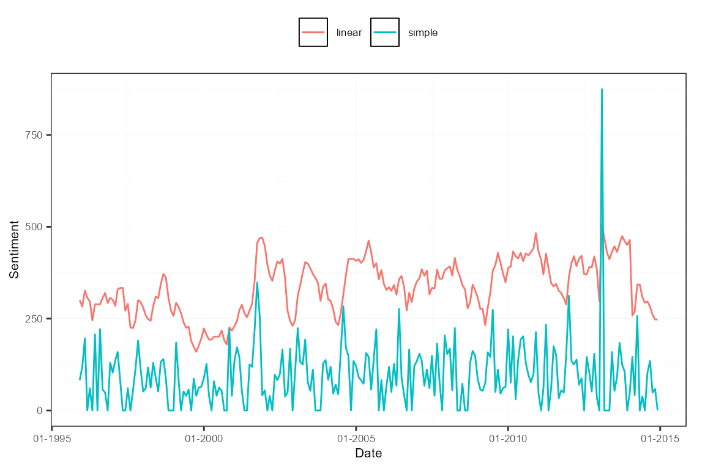
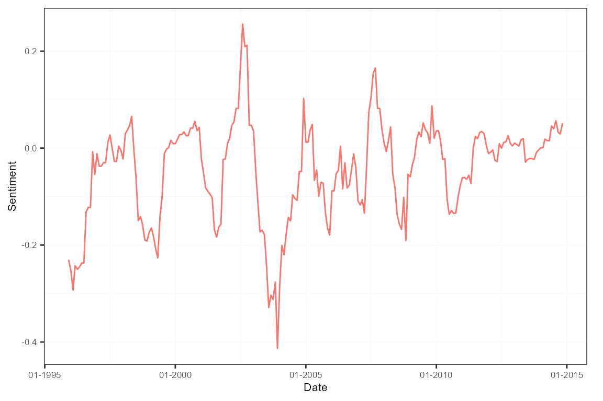

In this application, we create a regular and a sentiment-adjusted version of the well-known news-based Economic Policy Uncertainty (EPU) index. It fits very well within the package’s framework. Besides, the actual EPU index from January 1985 up to July 2018 for the U.S. is part of the package, see sentometrics::epu.
By a regular EPU index, we mean to largely follow the core methodology outlined here.
We load and transform the built-in corpus of 4145 U.S. news articles between 1995 and 2014 into a sento_corpus object. We only include the journal features, indicating article source (one of The Wall Street Journal or The Washington Post).
data("usnews")
corpus <- sento_corpus(usnews[, c("id", "date", "texts", "wsj", "wapo")])sento_lexicons objectWe take the original keywords used to pinpoint coverage about the economy (E), policy concerns (P) and uncertainty (U), and organize them into a sento_lexicons object.
keywords <- list(
E = c("economy", "economic"),
P = c("congress", "legislation", "white house", "regulation", "deficit", "federal reserve"),
U = c("uncertainty", "uncertain")
)
keywords_dt <- lapply(keywords, function(kw) data.table(x = kw, y = 1))
lex <- sento_lexicons(keywords_dt)These keywords lexicons are used in the compute_sentiment() function. For each EPU dimension, the obtained scores represent the number of keywords present in a given news article.
s <- compute_sentiment(corpus, lex, "counts")
s[, -c("date", "word_count")]## id E--wsj E--wapo P--wsj P--wapo U--wsj U--wapo
## 1: 830981846 0 0 0 0 0 0
## 2: 842617067 0 0 0 0 0 0
## 3: 830982165 0 1 0 0 0 0
## 4: 830982389 0 0 0 0 0 0
## 5: 842615996 0 0 0 0 0 0
## ---
## 4141: 842613758 2 0 0 0 0 0
## 4142: 842615135 2 0 0 0 0 0
## 4143: 842617266 2 0 0 0 0 0
## 4144: 842614354 1 0 0 0 0 0
## 4145: 842616130 1 0 0 0 0 0sentiment objectAs we are not interested in the number of keywords, but only in whether a keyword was present, we need some adjustments. In particular, we split the sentiment object and compute an EPU column per newspaper, with a score of 1 if at least two categories’ keywords show up, and 0 if not.
sA <- s[, 1:3]
sB <- s[, -c(1:3)]
to_epu <- function(x) as.numeric(rowSums(x > 0) >= 2) # >= 3 is too strict for this corpus
sB[, "EPU--wsj" := to_epu(.SD), .SDcols = endsWith(colnames(sB), "wsj")]
sB[, "EPU--wapo" := to_epu(.SD), .SDcols = endsWith(colnames(sB), "wapo")]
s2 <- as.sentiment(cbind(sA, sB[, c("EPU--wsj", "EPU--wapo")]))This new sentiment object is aggregated into a monthly average and a 12-monthly linear moving average time series per newspaper. Setting howDocs = "equal_weight" and do.ignoreZeros = FALSE normalizes the monthly values by the combined number of news articles in that month.
w <- data.frame("simple" = c(rep(0, 11), 1), "linear" = weights_exponential(12, alphas = 10^-10)[, 1])
ctr <- ctr_agg(howDocs = "equal_weight", do.ignoreZeros = FALSE,
howTime = "own", by = "month", lag = 12, weights = w)
sm <- aggregate(s2, ctr)The next step is to scale the newspaper-level EPU time series to unit standard deviation before a certain date (in this case, before 2005). Rather than unit standard deviation, we standardize to a standard deviation of 100.
dt <- as.data.table(subset(sm, date < "2005-01-01"))
sds <- apply(dt[, -1], 2, sd)
sm2 <- scale(sm, center = FALSE, scale = sds/100)
subset(sm2, date < "2005-01-01")[["stats"]]## EPU--wsj--simple EPU--wapo--simple EPU--wsj--linear EPU--wapo--linear
## mean 96.1926353 76.9955241 319.1703100 271.85568619
## sd 100.0000000 100.0000000 100.0000000 100.00000000
## max 380.3967953 389.0856498 644.9521817 526.74844061
## min 0.0000000 0.0000000 179.4097421 93.69645949
## meanCorr 0.1047356 0.1347121 0.1217423 0.08630789To then obtain the actual EPU index, the newspaper-level series are averaged by reapplying the aggregate() function. We are left with two series, one a moving average of the other.

A sentiment-adjusted EPU index adds a layer of news sentiment analysis to the typical creation process. The resulting index will fluctuate between negative and positive values depending on how news writes about topics related to economic policy uncertainty, rather than only analyzing if they write about it.
We start from scratch by reinitializing the corpus.
corpus <- sento_corpus(usnews[, c("id", "date", "texts", "wsj", "wapo")])We move forward by adding binary features to the corpus for the E, P and U keywords defined earlier. Next, we compute an EPU feature, based on the same mechanism using the self-created to_epu() function.
corpus <- add_features(corpus, keywords = keywords, do.binary = TRUE)
dv <- as.data.table(docvars(corpus))
dv[, EPU := to_epu(.SD), .SDcols = c("E", "P", "U")]Having detected the news articles to count in the EPU index, we need to normalize these counts. We do so per newspaper using some data.table magic, and then add the appropriate features to the corpus using add_features().
# compute total number of articles per journal and month
totArticles <- dv[, date := format(date, "%Y-%m")][,
lapply(.SD, sum), by = date, .SDcols = c("wsj", "wapo")]
setnames(totArticles, c("wsj", "wapo"), c("wsjT", "wapoT"))
dv <- merge(dv, totArticles, by = "date")
dv[, c("wsj", "wapo") := list((wsj * EPU) / wsjT, (EPU * wapo) / wapoT)]
for (j in which(colnames(dv) %in% c("wsj", "wapo"))) # replace NaN and Inf values due to zero division
set(dv, which(is.na(dv[[j]]) | is.infinite(dv[[j]])), j, 0)
corpus <- add_features(corpus, featuresdf = dv[, c("wsj", "wapo", "EPU")])We continue with a subsetted corpus carrying those articles discussing enough EPU material. We clean the features keeping only the normalized newspaper-level features.
corpus <- corpus_subset(corpus, EPU == 1)
docvars(corpus, c("E", "P", "U", "EPU")) <- NULLThe news sentiment layer is added by applying the all-at-once sentiment computation and aggregation function sento_measures(). The popular Harvard General Inquirer is the sentiment lexicon at service. Averaging across the newspaper series gives a final EPU index. Specific scaling as shown before is left aside.
sentLex <- sento_lexicons(sentometrics::list_lexicons[c("GI_en")])
ctr <- ctr_agg("counts", "equal_weight", "equal_weight", by = "month", lag = 12)
sm <- sento_measures(corpus, sentLex, ctr)
sm2 <- aggregate(sm, features = list(journals = c("wsj", "wapo")))
plot(sm2)